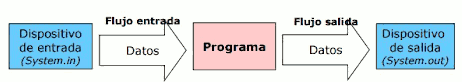
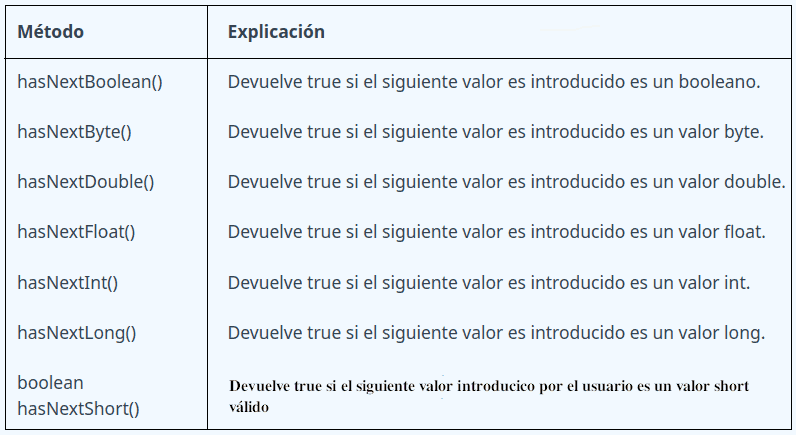
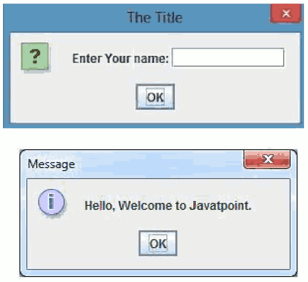
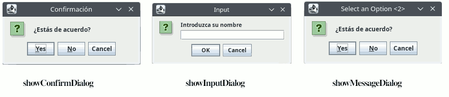
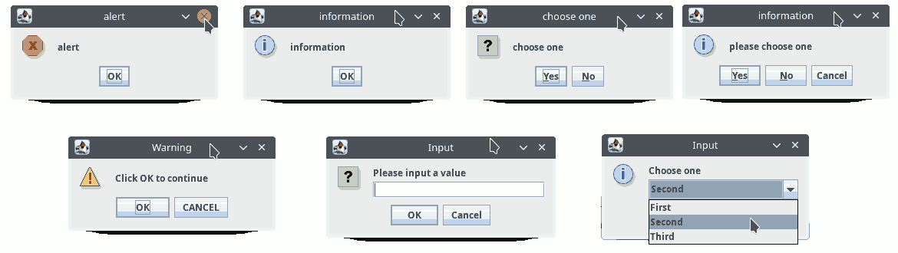

En la mayoría de aplicaciones, se presenta la posibilidad al usuario de introducir datos al programa (entrada), el cual los procesará y empleará para realizar determinadas acciones que finalmente aportarán unos resultados los cuales serán mostrados (salida) al usuario de la aplicación.

La entrada de datos a un programa, se puede obtener de diferentes formas:
- A partir de los valores insertados desde la consola por parte del usuario del programa.
- A partir de los valores insertados desde un formulario por parte del usuario del programa.
- Desde un fichero
- Desde una base de datos
- A partir de los datos obtenidos por un sensor (sensor de movimiento, infrarrojos, ultrasonidos, humedad, etc.)
En Java se define el concepto de stream (flujo), que es una abstracción para tratar la comunicación de información entre el programa y el exterior. Los streams son flujos secuenciales de bytes.
- Para que un programa pueda leer datos de alguna fuente, debe crear un stream de entrada conectado a ésta (teclado, fichero, ...).
- Para escribir datos hacia un destino, debe crear un stream de salida conectado a éste (pantalla, fichero, ...).
- Java proporciona distintas clases para el manejo de estos flujos de información, todas ellas contenidas en el paquete java.io
Los flujos actúan como interfaz con el dispositivo o clase asociada. Las ventajas de interpretar la E/S así son:
- Operación independiente del tipo de datos y del dispositivo
- Mayor flexibilidad (p.e. redirección, combinación)
- Diversidad de dispositivos (fichero, pantalla, teclado, red, …)
- Diversidad de formas de comunicación
- Modo de acceso: secuencial, aleatorio
- Información intercambiada: binaria, caracteres, líneas
En Java tenemos:
- System.in -> Entrada estándar ( objeto de la clase InputStream ).
Por defecto la entrada estándar está asociada al teclado. Algunos métodos útiles son:
• read() -> permite leer un byte de la entrada como entero
• skip( n ) -> ignora n bytes de la entrada
• available() -> número de bytes disponibles para leer en la entrada
- System.out -> Salida estándar ( objeto de la clase PrintStream ).
Por defecto la Salida estándar está asociada a la pantalla. Algunos métodos útiles son:
• print(parámetro) -> Escribe en pantalla el contenido de parámetro. Al finalizar la impresión el cursor se queda en la misma línea.
• println(parámetro) -> Escribe en pantalla el contenido de parámetro. Al finalizar cambia de línea.
• flush() -> vacía el buffer de salida escribiendo su contenido
- System.err ->Salida de error ( objeto de la clase PrintStream ).
Se utiliza para enviar mensajes de error. Es habitual que se encuentre asociado por defecto a la consola.
import java.io.*;
class LecturaDeLinea {
public static void main( String args[] ) throws IOException {
int c;
int contador = 0;
// se lee hasta encontrar el fin de línea
while( (c = System.in.read() ) != '\n' ) {
contador++;
System.out.print( (char) c );
}
System.out.println(); // Se escribe el fin de línea
System.err.println ( "Contados "+ contador +" bytes en total." );
}
}
Observa que para la clase System no se crean objetos. De hecho no se pueden crear objetos de la clase System. Para acceder a sus atributos o métodos se pone el nombre de la clase seguido de un punto y el nombre del atributo o método.
Entrada por consola utilizando Scanner
Leer byte a byte no es precisamente cómodo, por ese motivo se creó la clase Scanner, dentro del paquete java.util, que proporciona métodos para leer tipos de datos byte, short, int, long, float, double y String desde la consola Java.
Lo primero que debemos hacer es importar la clase Scanner a nuestro programa: import java.util.Scanner;
A continuación hay que crear un objeto de tipo Scanner y asociarlo a una entrada de datos, por ejemplo la entrada estándar:
Scanner sc = new Scanner(System.in);
Algunos métodos de la clase Scanner son:
| Método | Explicación |
| boolean nextBoolean() |
Lee valores lógicos boléanos introducidos por el usuario. |
| byte nextByte() | Lee valores byte introducidos por el usuario. |
|
short nextShort() int nextInt() long nextLong() float nextFloat() double nextDouble() String nextLine() char next().chartAt(indice) void close() |
Lee valores short introducidos por el usuario. Lee valores int introducidos por el usuario. Lee valores long introducidos por el usuario. Lee valores float introducidos por el usuario. Lee valores double introducidos por el usuario. Lee valores String introducidos por el usuario. También limpia el buffer después de leer un valor numérico para no tener problemas si a continuación se lee una cadena. Lee una cadena y devuelve el carácter indicado por la posición de índice. .next().chartAt(0) --> lee un carácter Cierra el flujo de entrada |
import java.util.Scanner;
public class EntradaSalidaConsola {
public static void main(String[] args) {
// Crear una instancia de Scanner para leer la entrada
Scanner scanner = new Scanner(System.in);
System.out.print("Ingresa un número entero: "); // Leer un entero
int numero = scanner.nextInt();
String nombre = scanner.nextLine();
System.out.print("Ingresa tu nombre: "); // Leer una cadena de caracteres
String nombre = scanner.nextLine();
System.out.println("Número ingresado: " + numero); // Imprimir los valores leídos
System.out.println("Nombre ingresado: " + nombre);
scanner.close();
}
Puede ser que el usuario en lugar de introducir un entero introduzca un double o una cadena o un long. En ese caso se produciría un error. En este tipo de situaciones debemos verificar si el valor que leemos corresponde al tipo de datos esperado por la clase Scanner. Para eso nos ayudaremos de los siguientes métodos que devolverán true si los datos tienen el formato adecuado.

Entrada y salida con ventanas emergentes
Si en lugar de hacer uso de la consola de nuestro IDE se prefiere realizar la entrada de datos o la salida mediante ventanas puedes utilizar la clase JOptionPane de la biblioteca javax.swing. A continuación, se muestra un ejemplo:
import javax.swing.JOptionPane;
public class EntradaSalidaVentanasEmergentes {
public static void main(String[] args) {
// Entrada de texto
String nombre = JOptionPane.showInputDialog(null, "Ingrese su nombre:");
// Mostrar el nombre ingresado
JOptionPane.showMessageDialog(null, "Hola, " + nombre + "!");
}
}
En este ejemplo, la ventana emergente showInputDialog se utiliza para solicitar al usuario que ingrese su nombre. El valor ingresado se guarda en la variable nombre. Luego, se muestra un mensaje emergente showMessageDialog que muestra un saludo con el nombre ingresado.

Los métodos más frecuentes son:
- static int showConfirmDialog(Component compPadre, Object msj) --> Abre un cuadro de diálogo con las opciones Sí, No y Cancelar; con el mensaje msj. En otras versiones permite modificar el texto de la barra de título, los botones que aparecen y el icono de la parte superior izquierda.
- static String showInputDialog(Component parentComponent, Object message) --> abre un cuadro de diálogo solicitando al usuario que introduzca una información.
- static void showMessageDialog(Component parentComponent, Object message) --> informa al usuario sobre algo que ha sucedido.
- static int showOptionDialog(Component componentePadre, Object msj, String titulo, int optionType, int msjType, Icon icon, Object[] options, Object initialValue) --> Abre un cuadro de diálogo con un icono específico, donde la opción inicial está determinada por el parámetro initialValue y la cantidad de opciones está determinada por el parámetro optionType (DEFAULT_OPTION, YES_NO_OPTION, YES_NO_CANCEL_OPTION, OK_CANCEL_OPTION). El parámetro msjType designa el tipo de mensaje que es, utilizado principalmente para determinar el ícono del aspecto (ERROR_MESSAGE, INFORMATION_MESSAGE, WARNING_MESSAGE, QUESTION_MESSAGE, PLAIN_MESSAGE). La gran unificación de los tres anteriores.

Ejemplos:
- JOptionPane.showMessageDialog(null, "alert", "alert", JOptionPane.ERROR_MESSAGE);
- JOptionPane.showInternalMessageDialog(null, "information", "information", JOptionPane.INFORMATION_MESSAGE);
- JOptionPane.showConfirmDialog(null, "choose one", "choose one", JOptionPane.YES_NO_OPTION);
- JOptionPane.showInternalConfirmDialog(null, "please choose one", "information", JOptionPane.YES_NO_CANCEL_OPTION, JOptionPane.INFORMATION_MESSAGE);
- Object[] options = { "OK", "CANCEL" };
JOptionPane.showOptionDialog(null, "Click OK to continue", "Warning", JOptionPane.DEFAULT_OPTION, JOptionPane.WARNING_MESSAGE, null, options, options[0]); - String inputValue = JOptionPane.showInputDialog("Please input a value");
- Object[] possibleValues = { "First", "Second", "Third" };
Object selectedValue = JOptionPane.showInputDialog(null, "Choose one", "Input", JOptionPane.INFORMATION_MESSAGE, null, possibleValues, possibleValues[0]);
El resultado sería:
